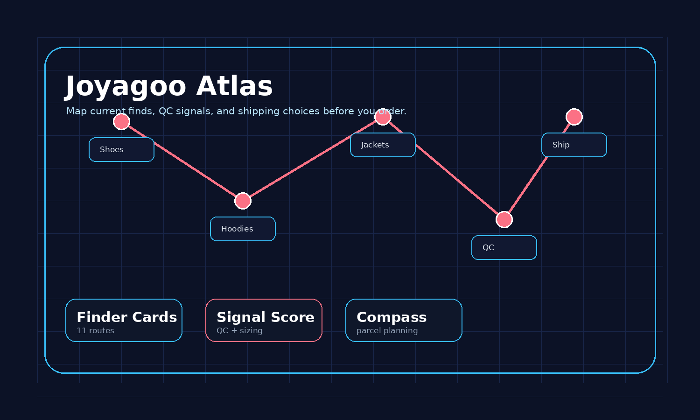

Joyagoo Spreadsheet is built like a route atlas: finder cards, QC signals, and a shipping compass help you compare options before ordering.

Each category works like a finder card with signals to verify before shipping.
footwear routes with sizing clues, sole checks, and box-weight decisions.
Signal: insole photosfleece, knitwear, embroidery, hood shape, and relaxed-fit layers.
Signal: chest widthgraphic tees, blanks, neck ribbing, wash risk, and layering basics.
Signal: print positionouterwear routes where weight, lining, zipper detail, and seasonal use matter.
Signal: zipper closeupsbottoms with waist, inseam, leg opening, cargo pocket, and fabric drape checks.
Signal: waist flatcaps, beanies, bucket hats, crown shape, embroidery, and strap hardware.
Signal: crown shapematching sets where color consistency and paired sizing decide the outcome.
Signal: top/bottom matchsmall basics, socks, pack counts, fabric comfort, and parcel filler choices.
Signal: pack countkits, patches, namesets, sponsor prints, and badge alignment checks.
Signal: badge alignmentbags, belts, wallets, sunglasses, and hardware-focused small items.
Signal: hardware finishseasonal extras, lifestyle pieces, desk finds, and unusual route discoveries.
Signal: seller photosThe compass turns each find into a simple evidence check.
Start with a category and collect candidates.
Check size info, photos, and seller signals.
Warehouse photos should prove the important details.
Consider parcel shape before shipping.
A route-based way to collect Joyagoo options, compare them, and avoid link-chasing chaos.
Use a simple card score for photos, size info, seller signals, and parcel risk.
A photo-by-photo guide for deciding whether a Joyagoo item is ready, risky, or needs more evidence.
A shipping guide built around parcel shape, bulk, box removal, and line tradeoffs.
A practical Joyagoo review focused on buying workflow, QC, support expectations, and seller risk.
Reduce Joyagoo ordering risk with better account habits, payment decisions, and QC review.
Browse current options, then return to the finder cards before you submit or ship.
Open Full Finds Directory →